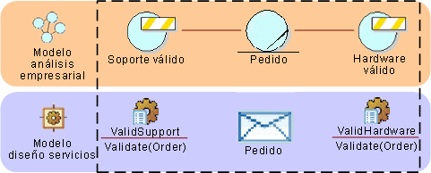

|
Determinadas clases de soluciones tienden a depender enormemente del uso de reglas empresariales para extraer la
variabilidad de la solución y externalizarla de modo que las reglas puedan evolucionar fuera de la lógica de aplicación
principal. A partir de un modelo de análisis empresarial que incluya entidades empresariales y reglas empresariales, es
posible definir servicios que encapsulen las reglas empresariales, externalizándolas del resto de la lógica de la
solución. El siguiente diagrama muestra un pequeño modelo de análisis empresarial de prueba con dos reglas
empresariales adjuntadas a la entidad empresarial denominada Pedido. Estas reglas, como están adjuntadas a una entidad
empresarial, se corresponden más probablemente con invariantes de la entidad y, por tanto, se evalúen al cambiar el
estado de la entidad. Las reglas también pueden adjuntarse a acciones o procesos y a menudo se evalúan como condiciones
previas o posteriores para la acción.

En el modelado del ejemplo anterior, se da por supuesto que hay una relación rastreable entre las especificaciones de
servicio derivadas de las reglas empresariales y entre los mensajes derivados de la entidad empresarial.
En muchos casos se agregan reglas complejas a los conjuntos de reglas, siendo más una coincidencia para la granularidad
del servicio, lo que permite, por ejemplo, que un documento se pase al servicio de validación en el que el conjunto de
reglas se evalúe y se devuelvan resultados. A partir del ejemplo anterior, podemos fácilmente imaginar que los
servicios de validación realmente incluyen un conjunto de reglas complejas para la validación de la compatibilidad de
los elementos solicitados, las cantidades, etc.
|